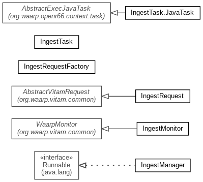

-
Class Summary
| Class |
Description |
| IngestManager |
IngestManager is the central logic for Ingest management between Waarp and
Vitam
|
| IngestMonitor |
IngestMonitor is the daemon taking care of IngestRequests through a
directory containing JSON files
|
| IngestRequest |
IngestRequest is the unitary entry for Ingest operations made by Waarp to
Vitam
|
| IngestRequestFactory |
Factory that handles IngestRequest within a directory
|
| IngestTask |
IngestTask is a one shot command that will initiate one specific Ingest
operation from a Waarp post task on reception.
|
| IngestTask.JavaTask |
Equivalent JavaTask
|
Package org.waarp.vitam.ingest Description
Ingest package contains all logic to apply from a Waarp reception of SIP
to Vitam ingest operation, and possibly the feedback operations, first
(mandatory) being the id of the ingest request, and second being the
pooling on ingest status and ATR from Vitam, leading to a forward of the
ATR to the partner as defined.
If the second is not done, it is the responsability of the Waarp partner,
when it receives the id of the Ingest operation from Vitam through Waarp
to handle directly the handling of the final status and its ATR.
Ingest is an upload into Vitam of a SIP (binary file in ZIP format) of
archives. This plugin allows to not use HTTP upload but special HTTP local
upload command of Vitam, using Waarp to upload the SIP.
Waarp-Vitam Ingest plugin works as a Vitam Ingest client as follow:
- After reception through Waarp, one post-operation will call this plugin
(through an ExecCommand or a JavaCommand) with extra informations as
needed. The command is the IngestTask main command (or constructor) to
allow the creation of the IngestRequest.
- The plugin will use the following command from Vitam Ingest Client:
RequestResponse<Void> ingestLocal(VitamContext vitamContext,
LocalFile localFile, String contextId, String action) throws
IngestExternalException;- Where arguments are:
- vitamContext = Among various information needed or optional for Vitam as
the tenant Id, the Access Contract, the ApplicationSessionId, the
PersonalCertificate
- localFile = the path to the local SIP file
- contextId = context of the SIP, among DEFAULT_WORKFLOW, HOLDING_SCHEME,
FILING_SCHEME,BLANK_TEST
- action = "RESUME" (no TEST mode will be supported such as "NEXT"
- Check Ingest and feedback:
- Once the SIP is passed to Vitam, an ID of Ingest Operation is given back
to the Waarp Partner.
- If the IngestRequest asks for it, the IngestMonitor will then pooling
the status of the Ingest to get back the ATR (ArchiveTransferReply) using
the following Vitam client command:
Response downloadObjectAsync(VitamContext vitamContext,String
objectId, IngestCollection type) throws VitamClientException;
- When received, the ATR is sent back to the Waarp Partner and the
IngesrRequest is closed.
- The pooling for the availability of the ATR is done using:
RequestResponse<ItemStatus> getOperationProcessStatus
(VitamContext vitamContext, String id)throws VitamClientException;
Documentation:
- http://www.programmevitam.fr/ressources/DocCourante/html/manuel-integration/client-usage.html
- http://www.programmevitam.fr/ressources/DocCourante/raml/externe/ingest.html
- http://www.programmevitam.fr/ressources/DocCourante/javadoc/fr/gouv/vitam/ingest/external/client/IngestExternalClient.html
- http://www.programmevitam.fr/ressources/DocCourante/html/archi/archi-applicative/20-services-list.html#api-externes-ingest-external-et-access-external
- http://www.programmevitam.fr/ressources/DocCourante/html/archi/archi-exploit-infra/services/ingest-external.html
- http://www.programmevitam.fr/ressources/DocCourante/html/archi/securite/00-principles.html#principes-de-securisation-des-acces-externes